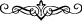

lezzetler ve hayırlar uğruna, gelip geçici sıkıntıları küçük ve önemsiz addederdiniz.
Yine öyle şeyler olur ki, cismânî ve nefsânî lezzetlerden “bir şey hoşunuza gider, fakat
o şey sizin için bir şer olabilir.” Basit lezzetler uğruna rûhânî lezzetlerden mahrûm
kalmış olabilirsiniz.
Hulâsa neyin hayır, neyin şer olduğunu “Allah bilir”. Şurası unutulmaması gerekir ki
kalbin rahat ve huzûru, nefsin hoşlanmadığı şeylere konulmuştur. Fakat “siz
bilmezsiniz”. Kalbin hayatı, nefsin ölümünde, yine kalbin ölümü de nefsin
diriliğindedir. Nitekim İbn Mansûr bir diğer beytinde şöyle der:
Ey dostlar! Öldürün beni öldürün.
Zira ölümümde hayat içinde hayat vardır.
Mesnevî’de de şöyle gelmiştir:
Hançer ve kılıç benim fesleğen çiçeğimdir,
Benim ölümüm de nergistan bahçesine girmemdir.
[139]. Buhârî, Îmân, 21; Hayz, 6; Müslim, 132; Tirmizî, Îmân, 6; Nesâî, Îdeyn, 19;
İbn Mâce, Fiten, 19; Dârimî, Vudu’, 104; Muvatta, Küsûf, 2; Müsned, I, 307; II, 67
[140]. Müslim, Cennet, 1; Ebû Dâvud, Sünnet, 22; Tirmizî, Cennet, 21; Nesâî, Eymân,
3; Dârimî, Rikak, 117, Müsned, II, 260, 333; III, 153, 254
[141]. Buhârî, Menâkıb, 25; Menâkibü’l-Ensâr, 29; İkrâh, 1; Ebû Dâvud, Cihâd, 97;
Müsned, V, 109, 110, VI, 395
[142]. Buhârî, Cenâiz, 80, 93; Müslim, Kader, 22-25; Ebû Dâvud, Sünnet, 17;
Tirmizî, Kader, 5; Muvatta, Cenâiz, 52; Müsned, II, 233, 253, III, 435, IV, 24
[143]. Buhârî, Tefsîr (92), 6; Müslim, Kader, 6; Müsned, I, 129